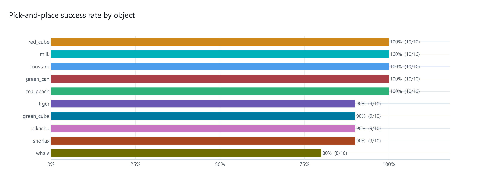
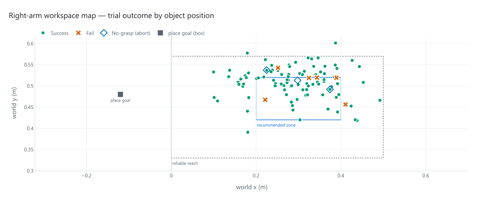
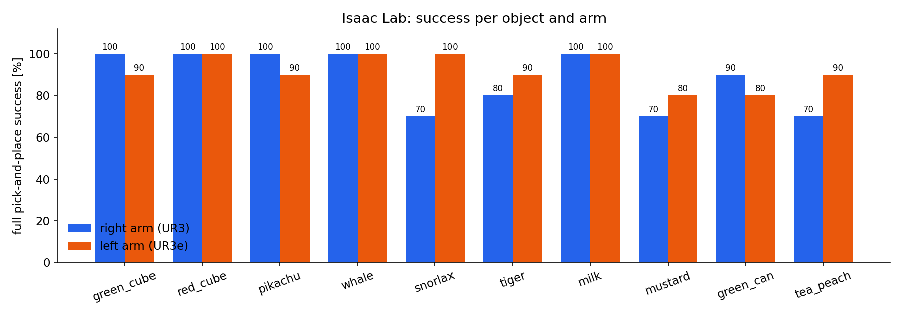
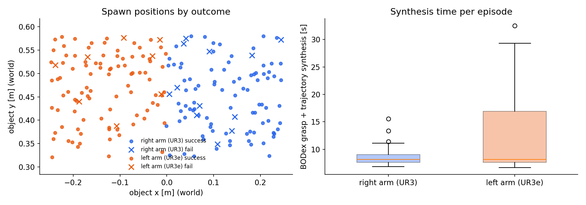

A camera finds the object in 6D, a GPU grasp synthesizer plans a multi-finger grasp plus a collision-free arm trajectory, and a UR arm with a 16-DoF Allegro hand picks the object and places it. One synthesis service drives both the Isaac Lab digital twin (both arms) and the real robot.
All 10 benchmark objects on the real robot (right UR3 + Allegro), 3× speed. Each object was localized by FoundationPose, then grasped and placed with a trajectory synthesized online.
Final benchmark, 2026-09-03: right UR3 + Allegro, 10 executed trials per object, with the object re-placed by hand at a new spot every trial and operator scoring.
| object | grasp | success | no-grasp aborts | mean grasp error | cycle time |
|---|---|---|---|---|---|
| green_cube | top | 9/10 | 0 | 0.086 | 52.1 s |
| red_cube | top | 10/10 | 0 | 0.088 | 55.1 s |
| pikachu (plush) | top | 9/10 | 0 | 0.142 | 56.4 s |
| whale (plush) | top | 8/10 | 1 | 0.172 | 52.4 s |
| snorlax (plush) | top | 9/10 | 0 | 0.079 | 61.6 s |
| tiger (plush) | top | 9/10 | 0 | 0.083 | 54.0 s |
| milk carton | top | 10/10 | 0 | 0.079 | 50.0 s |
| mustard bottle | side | 10/10 | 2 | 0.101 | 54.4 s |
| green_can | side | 10/10 | 0 | 0.133 | 54.1 s |
| tea_peach bottle | side | 10/10 | 0 | 0.127 | 55.9 s |
| all | 94/100 (94.0%) | 3 | 0.109 | 54.6 s |


The same synthesis service and code path, run on the dual-arm digital twin. Every episode uses a random spawn pose and a random place target, and the idle arm stays in the scene as an obstacle. Success means the object was lifted ≥ 3 cm and ended within 15 cm (xy) / 8 cm (z) of the target. 10 episodes per object per arm (2026-10-15). The left arm (UR3e) was only tested in simulation.
| object | grasp | right arm (UR3) | left arm (UR3e) |
|---|---|---|---|
| green cube | top | 10/10 | 9/10 |
| red cube | top | 10/10 | 10/10 |
| pikachu (plush) | top | 10/10 | 9/10 |
| whale (plush) | top | 10/10 | 10/10 |
| snorlax (plush) | top | 7/10 | 10/10 |
| tiger (plush) | top | 8/10 | 9/10 |
| milk carton | top | 10/10 | 10/10 |
| mustard bottle | side | 7/10 | 8/10 |
| green can | side | 9/10 | 8/10 |
| tea_peach bottle | side | 7/10 | 9/10 |
| all | 88/100 (88%) | 92/100 (92%) |


git clone https://github.com/ismael-esp/dexterous-pick-and-place.git
cd dexterous-pick-and-place
bash scripts/install.sh # bodex env + CUDA kernels + Isaac Lab scene assets
python scripts/check_install.py --synth # one real grasp + trajectory synthesis
ISAAC_PY=/path/to/isaaclab/python bash scripts/run_sim_benchmark.sh # both arms in Isaac LabTested on Ubuntu 22.04 with 2× RTX 5070 Ti, CUDA 12.8, Isaac Sim 5.1 + Isaac Lab 2.3.0 and ROS 2 Humble. The README covers hardware setup, adding objects, configuration and troubleshooting.